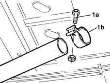

1076B36 cat rear sealing ring - replace
- Path
- Procedures > 10 ENGINE UNIT > 1076 EXHAUST PIPES AND SILENCERS > 1076B exhaust pipes and silencers > 1076B36 cat rear sealing ring - replace
- Kind
- repair procedure (removal / refitting; the operation number is the code)
- Applies to
- engines: 1.9 JTD 8V; all production periods
- Interactive page
- https://sloeber94.github.io/elrnDB-fMltpl/en/#/2891427
Applies to: engines: 1.9 JTD 8V; all production periods
 Removing
Removing
 Refitting
RefittingPlace the car on a ramp.
1080B62 catalytic converter - r + r
1. Completely undo the nut on bolt (1a) and remove anchorage ring (1b).

Applies to: engines: 1.9 JTD 8V; all production periods
Refitting
RemovingFit the anchorage ring.
1080B62 catalytic converter - r + r
Remove the vehicle from the ramp.